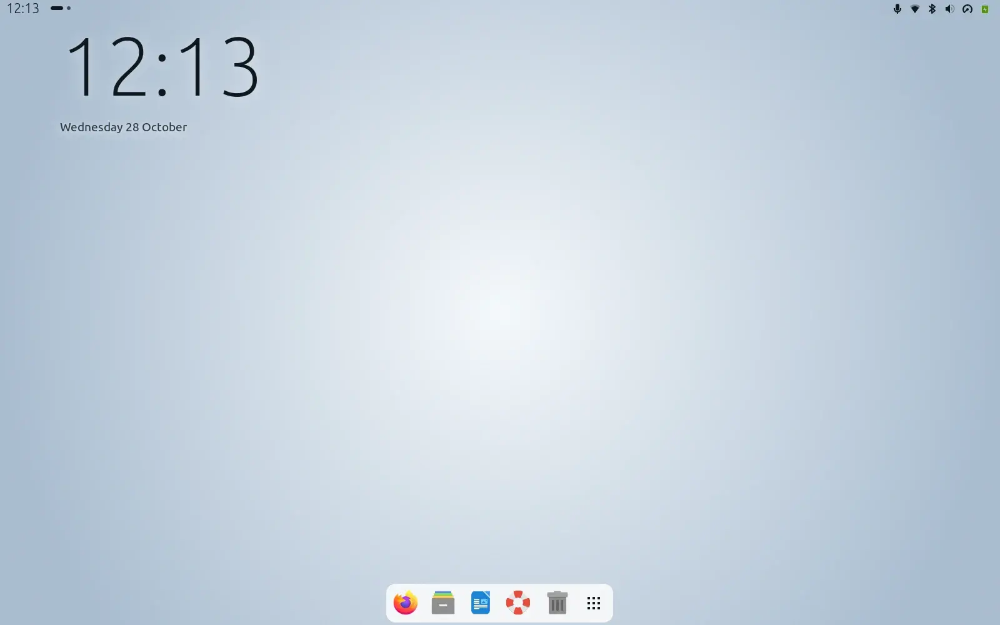
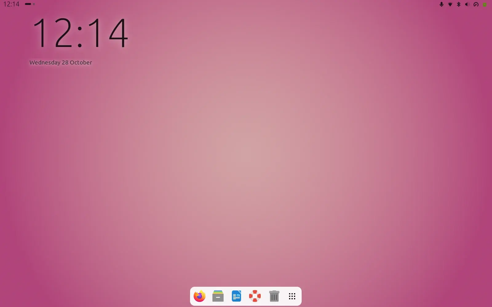
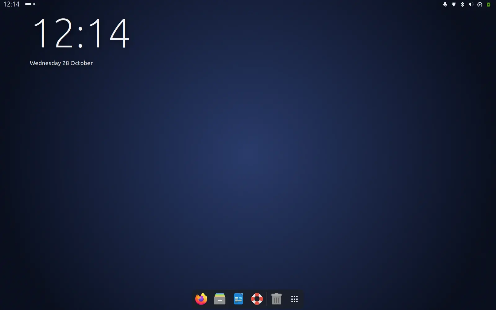
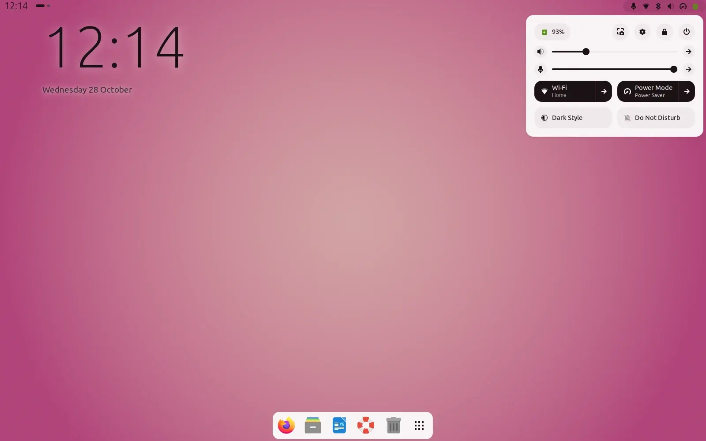
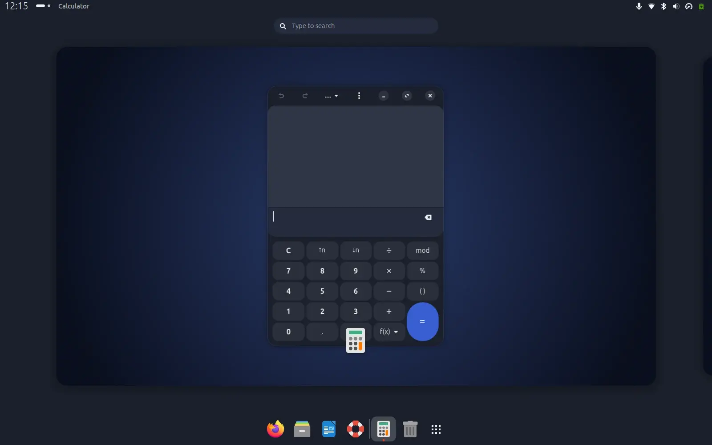
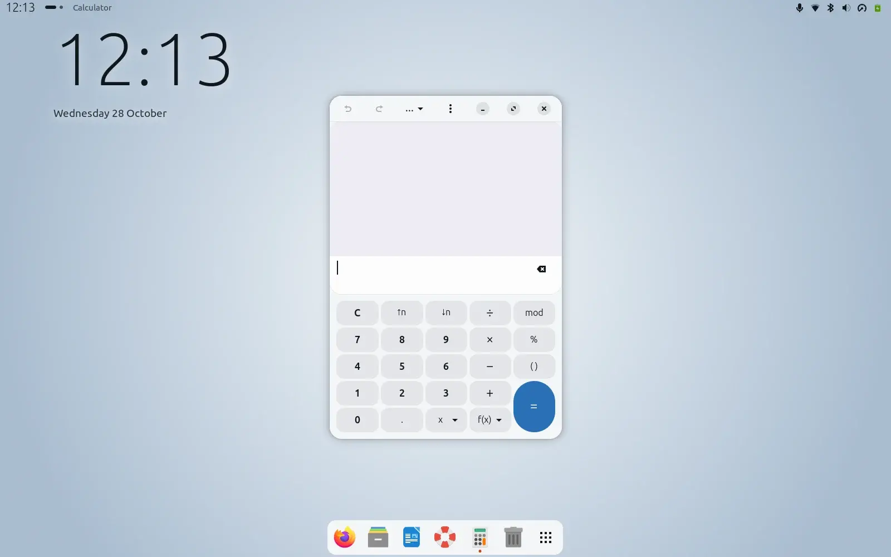
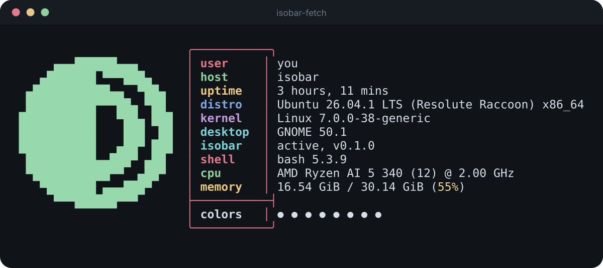

Isobar is the adaptive GNOME interface. A slim strip, a big clock, cards that go light or dark with the picture, and apps, icons, a dock and even the terminal that follow along. Everything is derived from the wallpaper you already have.
Pick a wallpaper, or use your own picture. It is read in your browser and never uploaded. The page you are looking at is recoloured by the same palette code the extension runs.
One picture, the whole desktop.
Real screenshots from a headless GNOME Shell 50 session. The same extension, three different wallpapers. Nothing here is edited.

Mist: a pale wallpaper gives dark text and light cards.

Dusk: the cards pick up the pink, softly.

Night: a dark wallpaper flips everything to dark.

The strip and quick settings
A transparent 28 px strip with the time, workspace dots and the app in front. Its text is dark or light, whichever reads better on the top of your wallpaper, and a soft veil appears only when neither does.
The quick settings card, menus, calendar and dialogs are cards tinted with the wallpaper's hue.

Overview, search and the dock
The overview, search, notifications and the dock all sit on the same card colour. The dock is a floating pill that hides when windows get in its way, and Isobar carries its settings with it.

Your apps
GNOME's own apps (Files, Settings, Calculator, Text Editor and the rest of the libadwaita family) get the wallpaper's colours and Isobar's shape language: soft radii, flat headers, round controls and thin sliders. Light and dark switch live, even in open windows.
Small things that follow too.
Icons and pointer
If you use Papirus, it swaps between Papirus-Light and Papirus-Dark with the scheme. The pointer goes DMZ-Black on light and DMZ-White on dark. Any other icon or cursor theme is left alone.
No grey flash
GNOME paints a stock grey while it starts. On Ubuntu that colour is a setting, so Isobar keeps it at your wallpaper's average and the desktop fades in from a matching tone.
Light or dark, automatically
Change the wallpaper and GNOME's light/dark preference follows its brightness, so GTK and libadwaita apps flip with it.
The dock comes along
Position, hiding, icon size and opacity are part of Isobar. It remembers what you had, restores it when you switch Isobar off, and reads overrides from ~/.config/isobar/dock.json.
Login screen
An optional login theme built from Ubuntu's own, with your wallpaper darkened and blurred, no Ubuntu logo and a soft name card. It is installed as an alternative, so Ubuntu's stays one command away.
Coucou
If you run Coucou, its island can wear the card colour too. It is opt-in, writes one setting and restarts Coucou once when the colour changes.
How it works.
No machine learning and no network. A small, tested piece of arithmetic, written once and used in the extension, in the tests and in the demo above.
Sample
The wallpaper is shrunk to a 48 by 30 thumbnail. Three regions matter: all of it, the band under the bar, and the patch under the big clock.
Decide
The hue is the circular mean of the saturated pixels; grey pixels get no say. Light or dark comes from the picture's brightness. Cards, text, a muted tone and an accent follow.
Check
Body text keeps at least 7 to 1 against its card, muted text and the accent at least 4.5 to 1, and white on the accent stays readable. Unit tests cover every hue.
Apply
One shell stylesheet, one GTK stylesheet with light and dark blocks, and a few settings. It runs again when the wallpaper or the light/dark preference changes.
Even the terminal.
The mark is also a logo for fastfetch, drawn with block characters from the real symbol. isobar-fetch prints it in your wallpaper's accent colour.

# installed by the repo's brand/terminal folder
isobar-fetch # small logo
isobar-fetch --big # large logo
Install.
Isobar is an extension for GNOME Shell 50 on Wayland, written and tested on Ubuntu 26.04. It touches only the settings listed below, and switching it off puts the dock and the app colours back.
git clone https://github.com/CaptainPancakeWithBacon/isobar.git
cd isobar
tools/install.sh # links the extension, enables nothing# log out and back in once, then:
gnome-extensions enable mist@gijs.dev
The extension id is still mist@gijs.dev, the project's working name.
What it changes
Where
What Isobar does
GNOME Shell
Hides Activities and the date menu, adds the clock, dots and app name to the bar, pins the bar to 28 px, restyles the shell with one stylesheet.
org.gnome.desktop.interface
color-scheme follows the wallpaper's brightness when it changes. icon-theme and cursor-theme swap only if you already use Papirus or DMZ.
~/.config/gtk-4.0/
Writes mist.css and adds one import line to your gtk.css. Switching Isobar off removes both.
org.gnome.shell.extensions.dash-to-dock
The dock profile: position, hiding, icon size, opacity. Remembered and restored. Override in ~/.config/isobar/dock.json, or {"manage": false} to leave the dock alone.
com.ubuntu.login-screen
Ubuntu only: background-color is kept at the wallpaper's average.
~/.cache/isobar/
The current accent colour, for the terminal logo.
Coucou (opt-in)
Only if ~/.config/mist/coucou exists: its island colour, with one restart per change.
Undo
gnome-extensions disable mist@gijs.dev # restores the dock, removes the app colours
rm ~/.local/share/gnome-shell/extensions/mist@gijs.dev
The mark has no colour of its own.
A solid half disc whose other half dissolves into contour lines: light and dark in one shape, drawn with the lines of an isobar map. In Isobar's own interface it wears the wallpaper's accent. Where it cannot adapt, it is ink or paper.
master, 48 px and up
small cut, 24 to 47 px
favicon cut, under 24 px
stacked
Ink #101418
Paper #F6F8F9
Fog #DDE2E6
Slate #4A5764
Logo files, guidelines and a presentation board are in the repository's brand folder.
Early, personal and honest.
What is checked
Unit tests for the palette, the GTK stylesheet, the dock profile and the Coucou sync. A headless GNOME Shell 50 test that loads the extension, changes the wallpaper, opens apps, and checks colours, the bar height, the dock and the restore path. Every screenshot above comes from it.
What is not
It has run on one laptop. GTK3 apps are not restyled yet. Blur My Shell can override themes, so switch off its panel and popup styling. The extra bars of Multi-Monitors Bar are not styled. The login theme is a snapshot of the wallpaper from when you built it.